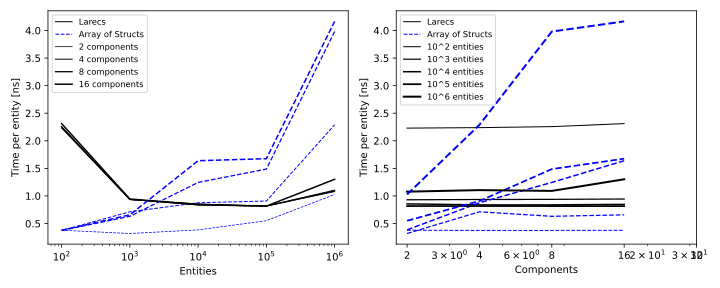

Benchmarks
The focused entity_selection_benchmark.mojo workload compares ordinary
full-world host execution with contiguous and disjoint 64-row selections in a
100,000-row world, a selected add/remove chain, and selected device execution when
an accelerator is available. On the Apple Metal development host used for the
1.0.0b2 work, one bounded run measured approximately 0.0253 ms for the 100k-row
host path, 0.0000664 ms for the contiguous selection, 0.000556 ms for 64 disjoint
single-row ranges, 0.00727 ms for the add/remove chain, and 0.379 ms for the device
selection. These are development measurements, not a cross-version historical
baseline; use the benchmark on target hardware for regression decisions.
The manual host thread dispatch experiment compares complete sequential kernel calls with dynamically claimed whole-store and contiguous chunk jobs at 1/2/4 worker tasks, including small and large increment/compute workloads and single-store cases. Its driver, timing boundaries, reproduction commands, and Linux measurements are recorded there. It is a restricted feasibility benchmark; the current experimental engine adds eligibility and lifecycle checks absent from that prototype. Both drivers remain outside the normal PR performance gate.
Benchmark methodology
Build a focused manual driver once with
pixi run mojo build -I src benchmark/<benchmark_filename>.mojo -o /tmp/larecs-benchmark,
then run /tmp/larecs-benchmark repeatedly. Run the complete manual suite with
pixi run mojo run -I src benchmark/run_benchmarks.mojo.
When changing storage, queries, classification, row movement, or execution costs, add or update representative benchmarks using these criteria:
- Keep the combined PR performance checks near one minute per runner, including compilation, warmup, and sampling. Measure cold compilation and execution separately on Linux and macOS before expanding the suite. Keep large worlds, GPU cases, and the complete benchmark registry in focused manual drivers.
- Use deterministic inputs, bounded calibration or fixed iteration counts, and a compact scenario matrix. Spatial cases should cover uniform, dense, sparse, and moving entities with different maintenance cadences.
- Compare identical entities and semantic work, with an unchanged-layout control. Measure isolated operations and complete frames when useful. Include input updates, classification, sorting, movement, location repair, and transfers whenever they belong to the claimed workload. State excluded setup and maintenance costs; validate results, locations, and payload preservation outside the timer, and consume results to prevent dead-code elimination.
- Build each timing binary once, then run it repeatedly. Compare the same current driver against baseline and current libraries on the same runner with matching compiler versions and optimization settings. Use optimized builds without debug info, sanitizers, or tracing. Run builds and measurements sequentially, with no competing benchmark jobs, and report compilation separately.
- Warm both binaries, alternate baseline/current order, and use repeated paired samples. Keep machine-specific timing baselines out of the repository. See PR performance checks and spatial checks for baseline selection, thresholds, confirmation, and support for revisions predating the spatial API.
- Keep the small regression checks in
pixi run tests teston Linux and macOS; focused test-file runs omit performance checks. Investigate sustained failures and document evidence before changing thresholds; use dedicated measurements for smaller regressions. - Keep scenario matrices and expected-case manifests synchronized. Invalid or incomplete reports, build failures, and correctness failures must fail checks. Update this guide when changing cases, timing boundaries, sampling, or baseline selection. Record hardware, compiler, method, and limitations with performance claims; track unmeasured benefits and remaining work in the roadmap.
Threaded host execution
benchmark/threaded_execution.mojo measures the implemented public
SystemContext.run[kernel, threaded=True]() against unchanged sequential calls.
Both worlds have identical initial rows, arithmetic, and layout. The driver
covers 1/2/4 worker tasks, one/four stores, balanced and seven-to-one skewed
stores, 1,024–1,048,576 total rows, and increments or 32 dependent arithmetic
rounds per row. It forces min_parallel_rows=0 to expose dispatch overhead;
configured one-worker runs still use whole-range sequential fallback.
Each case warms both paths twice, calibrates the sequential path to a 10 ms batch or at most 4,096 calls, then alternates order across five paired samples. Complete-call timing includes discovery, validation, spatial-invalidation checks, resource binding, context allocation, atomic claiming, dispatch, join, cleanup, and world-size consumption. Construction, initial runtime warmup, compilation, and exact result validation are excluded. Every final row is validated against all warmup, calibration, and measured calls. No resources or spatial classifiers are bound; shared-resource, selected, and partitioned correctness lives in the tests, while their performance remains unmeasured here.
pixi run mojo build -I src benchmark/threaded_execution.mojo -o /tmp/larecs-threaded-benchmark
/tmp/larecs-threaded-benchmark
/tmp/larecs-threaded-benchmark
/tmp/larecs-threaded-benchmarkBuild once without debug info, tracing, or sanitizers. Run measurements without
other builds or benchmark jobs. Each PAIR line contains skew flag, base rows
per store, store count, arithmetic rounds, worker count, pair index, calls per
batch, sequential ns/call, and threaded ns/call. In skewed cases, total rows
are ten times the base row count. Report compilation separately and retain
hardware/compiler details; this synthetic comparison establishes no portable
cutoff, fixed speedup, or application-level benefit.
At revision 4489ceb, on Linux x86-64 (7.2.5-3-omarchy), AMD Ryzen 7 PRO
5850U (8 cores, 16 hardware threads), Mojo 1.0.0 (ed45d567), and MAX 26.5.0,
the optimized build took 17.57 seconds in the installed environment; this is not a cold-cache
compilation measurement. Three serial binary runs took 7.12, 7.48, and 7.70
seconds after regression builds completed. All 30 scenarios and 450 paired
measurements passed exact result validation. Raw local output is retained in
ignored output/threaded-execution/run-{1,2,3}.txt files.
Four-worker results below summarize 15 pairs per case. Times are medians in microseconds per complete call; speedup is the median paired ratio, so it need not equal the ratio of the displayed medians.
| Total rows | Stores | Work per row | Sequential µs | Threaded µs | Speedup |
|---|---|---|---|---|---|
| 1,024 | 4 balanced | increment | 0.718 | 16.072 | 0.04× |
| 65,536 | 4 balanced | 32 rounds | 1,869.585 | 550.040 | 3.44× |
| 262,144 | 1 | increment | 100.969 | 46.486 | 2.24× |
| 1,048,576 | 4 balanced | increment | 406.295 | 141.176 | 2.95× |
| 1,048,576 | 1 | 32 rounds | 32,106.429 | 8,967.991 | 3.50× |
| 163,840 | 4 skewed | 32 rounds | 4,999.816 | 1,455.091 | 3.39× |
This is one developer machine with unpinned affinity and frequency. Tiny increments lose substantially when the row cutoff is explicitly disabled; the default cutoff avoids that dispatch. These measurements cover neither macOS arm64 nor application kernels, shared-resource workloads, exact selections, spatial maintenance, or partitioned layouts. The engine remains experimental.
Synchronization primitives
benchmark/synchronization_benchmark.mojo is a focused manual comparison of
100,000 sequential scalar increments using a plain scalar control, direct Mojo
relaxed atomics, Larecs relaxed atomic views, and uncontended write guards. Every
case performs equivalent increments and consumes results. Setup and final exact
total validation are excluded; guard acquisition, payload access, and release
are included. These are isolated uncontended costs, not complete ECS execution,
contention, allocation, transfer, or GPU measurements. No new timing cases are
added to the normal PR performance suite.
Build once without debug information, sanitizers, or tracing, warm the binary, then run repeated samples without other builds or benchmark jobs:
pixi run mojo build -I src benchmark/synchronization_benchmark.mojo -o /tmp/larecs-synchronization
/tmp/larecs-synchronizationReport compilation time separately from execution and retain hardware/compiler
details with timing claims. Concurrent compound access and exact atomic totals
are correctness checks in test/synchronization_test.mojo; contended performance
and complete binding/transfer measurements remain roadmap work.
Shared host execution comparison
The focused selection driver also measures thin and lexical host kernels over
seven matching archetypes (512 rows each) alongside six nonmatching archetypes
(512 rows each). All matching rows perform the same increment; the closure also
counts range invocations. Construction and result checks are excluded, and
checks outside the timer verify row count, every row against Bencher.num_iters,
and the closure’s exact invocation count and accumulated values.
These cases remain manual benchmarks; they are not added to the small PR suite.
On Apple M4, macOS 27.0.1, Mojo 1.0.0 (ed45d567), the shared host setup refactor
in 1cd32ba was compared with 688fb670c87ced6b08c920e2c3527a1890218c6f
using the same updated driver and compiler environment. Build one optimized
binary against an isolated baseline checkout and one against the current source, without
-g, sanitizers, or tracing. Warm each once, then alternate baseline/current
order across five paired samples with no concurrent builds or benchmark jobs.
The driver uses fixed iterations: 100 full-world calls, 1,000 multi-archetype
calls, 10,000 contiguous selected calls, and 1,000 disjoint selected calls.
| Host workload | Baseline median | Refactor median |
|---|---|---|
| 100,000 rows, full-world thin | 23.33 µs | 22.89 µs |
| 3,584 rows, seven matching archetypes, thin | 1.269 µs | 1.034 µs |
| Same rows, lexical closure | 1.089 µs | 0.885 µs |
| 64 selected contiguous rows in a 100k world | 69.0 ns | 18.5 ns |
| 64 selected disjoint single-row ranges in a 100k world | 690 ns | 257 ns |
The unchanged mutation controls measured 10.13 → 10.09 µs for a 64-row add/remove chain and 107 → 98 µs for the first 512-row disjoint mutation pass. The existing selected device case ran on the actual Apple M4 accelerator and measured 276.31 → 267.52 µs. These short synthetic batches are local evidence, not portable timing baselines or application speedup claims. Full-world row work dominates discovery at 100k rows; small selections benefit from avoiding matching-range allocation. Compilation is excluded from every operation timing. The initial baseline driver build took 18.65 seconds; a repeated current build took 1.36 seconds with local compiler caches populated. These build times are not comparable cold-compilation measurements and establish no compilation speedup. Linux operation timings remain unmeasured locally.
Reproduce with the current driver against both libraries:
pixi run mojo build -I /path/to/baseline/src benchmark/entity_selection_benchmark.mojo -o /tmp/larecs-selection-base
pixi run mojo build -I src benchmark/entity_selection_benchmark.mojo -o /tmp/larecs-selection-current
/tmp/larecs-selection-base
/tmp/larecs-selection-currentVersus Array of Structs
The plots below show the iteration time per entity in the classical Position-Velocity example.
That is, iterate all entities with components Position and Velocity, and add velocity to position:
position.x += velocity.x
position.y += velocity.yThe benchmark is performed with different amounts of “payload components”,
where each of them has two Float64 fields, just like Position and Velocity.
Further, the total number of entities is varied from 100 to 1 million.

Note that the benchmarks run in the Github CI, which uses very powerful hardware. Particularly, the processors have 256MB of cache. On a laptop or desktop computer with typically much less cache, Larecs🌲 will outperform AoS for everything but the smallest setups.
PR-to-PR performance checks
pixi run performance-check --base <revision> compares the current library
with another Git revision on the same machine. Without --base, local runs
compare the working tree against committed HEAD; GitHub PR runs use the exact
PR base SHA, and main-branch push runs use the previous push commit. The tested
current revision is the checkout SHA (normally the PR merge commit in CI).
The complete pixi run tests test command runs the gate on Linux and macOS
following correctness tests. Focused test-file runs omit it.
The coordinator builds the same current driver against both source trees with the installed Mojo compiler, using optimized builds without tracing, debug information, or sanitizers. It warms both binaries, then runs five pairs, alternating baseline/current order. A case becomes a candidate only if four pairs and the paired medians show over 30% slowdown and over 500 ns extra operation/frame time. Candidates are checked in a fresh five-pair round; only candidates recurring in both rounds fail. Invalid/incomplete reports, incorrect results, compilation failures, unavailable baselines, and timeouts fail rather than silently skipping coverage.
The two focused drivers avoid the expensive complete benchmark registry:
| Core case | Sizes | Timed work | Excluded setup and validation |
|---|---|---|---|
access |
512/2,048 matching rows | Stable-ID component reads and integer checksum | World construction; exact per-entity payload checks |
query |
512/2,048 matching rows | Fresh filtered iterator, row visits, and checksum | Construction of two matching archetypes and equally many excluded tag-only rows; payload checks |
execute |
512/2,048 rows | Ordinary host dispatch and integer increments | Construction; check every row’s accumulated increments |
selected_execute |
64 selected rows amid 512/2,048 background rows | Host dispatch over a reusable contiguous selection | Construction and selection creation/release; selected and untouched-row checks |
selected_mutation |
Same selection/background sizes | Add/remove a tag, including partial-archetype movement and location repair | Construction; final membership, absence of tags, payload, and background-location checks |
batch_cycle |
512/2,048 rows | Batch creation, payload initialization, removal, and recycling | World construction and first validation/warmup cycle; recycled payload, membership, and surviving control-row checks |
Core calibration doubles from 8 to at most 8,192 operations, stopping at 5 ms per case. Fast cases can reach the cap first. Each duration is per complete operation, not per entity. Read cases consume the checksum inside the timer; execution writes are checked after timing, with observable lengths consumed inside the timer. Spatial boundaries and its unchanged matrix are below.
Run one driver with pixi run core-benchmarks or pixi run spatial-benchmarks.
Select a gate with pixi run performance-check --suite core --base <revision>
or --suite spatial; repeat --suite to select multiple drivers. The original
pixi run spatial-performance-check remains a spatial-only compatibility command.
Reports default to the ignored output/performance/ directory; use --output
to choose another directory. report.json includes the schema version,
requested/resolved/effective baselines, current checkout SHA and dirty state,
driver SHA-256 hashes, compiler, OS/CPU, thresholds, compilation and sampling
costs, all paired measurements, and both confirmation rounds when needed.
summary.md gives median times, paired changes, candidates, and confirmed
failures. Candidates whose confirmation did not finish are labeled unconfirmed;
only a completed confirmation can label a candidate transient. Process logs
retain build, warmup, execution, and error diagnostics.
GitHub adds the Markdown to the job summary and uploads the reports/logs as
performance-<runner>-<attempt> artifacts for 30 days, including failed checks.
This uses read-only PR permissions and works without publishing PR comments.
Require the existing build/test checks in branch protection to enforce the gate.
The initial unchanged-library comparison against 688fb67 on Apple M4,
macOS 27 arm64, Mojo 1.0.0 (ed45d567), took 55.3 seconds: core builds
9.3/9.6 seconds and sampling 2.6 seconds; spatial builds 5.8/5.4 seconds and
sampling 22.2 seconds. Builds and samples ran sequentially; no concurrent
builds or benchmark jobs ran. These are driver compilation costs in an already
installed environment, not dependency installation time.
The first hosted run
compared the same unchanged library against 688fb67, using PR merge checkout
ba8b180, Mojo 1.0.0 (ed45d567), the same current driver on each side, fresh
output binaries, sequential compilation/sampling, and five alternating pairs.
Both suites passed without confirmation, and both artifact uploads succeeded:
| Runner | CPU / OS | All driver builds | All sampling | Total gate |
|---|---|---|---|---|
macos-latest |
Apple M2 Pro (Virtual), macOS 26.6.2 arm64 | 43.1 s | 22.1 s | 66.1 s |
ubuntu-latest |
AMD EPYC 7763, Linux 6.17 x86_64 / glibc 2.39 | 50.2 s | 24.6 s | 75.3 s |
These are one-run runtime measurements, not speed comparisons between platforms or evidence that the runner’s load is stable. Full correctness tests, examples, package checks, and environment installation are excluded from these gate costs. The combined check stays near a minute; further coverage requires new budget measurements on both platforms. Confirmation adds sampling cost for affected suites; command deadlines bound failures rather than promising a one-minute runtime for all error/confirmation paths.
There are no checked-in machine-specific golden timings. Driver changes affect both sides; compare historical evidence only when hashes and environments are compatible. Compiler upgrades do not measure compiler-to-compiler changes. These broad thresholds target substantial regressions on shared runners; smaller or cumulative regressions, larger worlds, heap-backed payloads, disjoint selections, and device costs need focused measurements or future coverage. See decision 0011 and the roadmap.
Small spatial benchmarks on every PR
Run pixi run spatial-benchmarks for one bounded CPU-only comparison, or
pixi run spatial-performance-check --base <revision> for a regression check.
The complete pixi run tests test command runs this suite through the shared
coordinator after successful correctness tests, on both Linux and macOS PR
runners. Focused test-file runs omit it. The existing 100,000-row maintenance benchmark and the full benchmark
suite remain manual measurements.
The small driver uses 512 and 2,048 entities, one archetype, an integer cell key and a 128-byte SIMD payload per row. It inserts rows in a deterministic scrambled order, then compares the same stable-ID cell visits before and after spatial ordering. Its 32 cases cover:
| Workload | Cell distribution | Timed work |
|---|---|---|
| Static cell aggregates | Uniform: 8 entities/cell | Read keys and all payload lanes; sum and square each cell’s aggregate |
| Static cell aggregates | Dense: 64 entities/cell | Same operation, with fewer occupied cells |
| Static cell aggregates | Sparse: 8 entities/cell, key gaps of 1,024 | Same operation across nonconsecutive occupied keys |
| Maintenance alone | All three distributions | Clean explicit boundary, or reverse keys via stable-ID access and sort/move/repair every pass |
| Moving cell aggregates | Uniform | Update every entity’s cell, aggregate cells, maintain every frame or every fourth frame |
Static workload timing excludes construction, registration, and the initial maintenance pass. Mobile timing includes input updates and the selected maintenance cadence; its scrambled control performs the same updates and cell visits without maintenance. Maintenance-only reversal and conservative marking via mutable stable-ID access are included in timing. A clean ordered boundary uses deferred maintenance in the current library and full classification in older baseline libraries. This is an intentional maintenance-contract change; use the dedicated comparison below for an explicit full-scan control. Checksums validate aggregate results and payload preservation, and a query validates maintenance’s output order, outside the timer. These are synthetic cell aggregates; full neighborhood algorithms, additional archetypes, transfer costs, and larger working sets remain separate measurements.
Each batch doubles from 8 to at most 8,192 frames, stopping once it takes 20 ms. The checker compiles the same current driver against the current library and the PR’s base commit, warms both binaries, then collects five paired runs with alternating execution order. It reports median frame times and paired changes for both ordered and scrambled controls. A case fails only when at least four pairs show both over 30% slowdown and over 500 ns extra time, and the paired medians exceed those thresholds. A suspected regression must recur in a fresh five-pair run. This broad threshold catches substantial regressions on shared runners; smaller changes need dedicated measurements. No machine-specific timing baseline is checked in.
The baseline comes from the GitHub PR event’s base SHA. Local runs default to
committed HEAD; pass --base to compare another revision. An unavailable full
SHA is fetched over public HTTPS. Since release PR #174 predates the spatial
API, spatial PR #175 bootstraps against 42234f3b43d4dda58a674842374115f78ec2f08d,
the implementation before this benchmark addition. Subsequent PRs whose base
has the spatial API use their actual base. Compilation, malformed/missing
records, checksum failures, and sustained regressions all fail the check.
Deferred dirty classification
Build pixi run mojo build -I src benchmark/dirty_spatial.mojo -o /tmp/larecs-dirty-spatial,
then run that binary with no concurrent compilation or benchmark jobs.
It constructs identical scrambled 2,048/32,768-entity worlds with 72 component
bytes per row plus entity IDs, establishes initial spatial order, warms both
paths, and alternates five paired samples of sixteen frames (1,024 frames for
clean boundaries to resolve their small cost). The 24 scenarios
cover uniform (16 entities/cell), dense (256/cell), and sparse (16/cell with
key gaps of 128) distributions, with 0, 1, 1/64, or all identities updated.
Each updated identity receives two reference writes per frame; classification
observes final values. On alternating frames those writes cancel. Other frames
advance cells by one. Both paths perform identical updates and semantic work.
The deferred path uses automatic tracking. Its control requests a full rebuild after those same writes. Timings include updates, marking, key scratch allocation, classification, sorting, typed movement of all columns, and location repair. Construction, registration, initial maintenance, and correctness checks are excluded. Every sample validates complete key order, each identity/location, the expected final input for every identity, and all eight payload lanes outside timing through read-only queries. Output records rows, distribution, dirty count, pair number, and deferred/full frame ns. This compares current deferred maintenance with current explicit full rebuilds; it does not measure a historical implementation or total application speedup.
Clean calls do no row work. Dirty calls still copy O(entity-ID capacity) keys and inspect affected archetypes, so sparse classification is not O(D) complete maintenance. Full rebuilds currently reset sparse membership and caches. Dense updates may favor contiguous full classification; structural-heavy workloads use full rebuilds. Retained keys/membership cost at least nine bytes per allocated ID plus queue capacity (full ID/generation identities and allocator slack). Scratch and movement metadata add temporary memory. These are layout costs, not measured application memory usage.
A local run on Apple M4, arm64, Mojo 1.0.0 (ed45d567) with implementation
76868ef (based on 0241e91) built the optimized driver in 4.74 seconds.
Five warmed pairs gave these median complete-frame times for 32,768 entities:
| Distribution | Dirty identities | Deferred | Explicit full rebuild | Deferred/full |
|---|---|---|---|---|
| Uniform | 1 | 0.685 ms | 1.076 ms | 0.637 |
| Uniform | 512 | 0.749 ms | 1.133 ms | 0.661 |
| Dense | 512 | 0.811 ms | 1.194 ms | 0.679 |
| Sparse | 1 | 0.097 ms | 0.490 ms | 0.198 |
| Sparse | 512 | 0.112 ms | 0.497 ms | 0.226 |
| Uniform | 32,768 | 0.850 ms | 0.858 ms | 0.991 |
Across both sizes and all distributions, nonzero sparse-update scenarios took 19.5–67.9% of the full-rebuild frame time. Clean boundaries measured approximately 3–4 ns (close to timer resolution), versus 0.031/0.490 ms full rebuilds at the two sizes. Fully dirty frames took 99.1–104.6% of the explicit control. An earlier version that resolved every dirty identity separately took 131–141% for fully dirty frames; the accepted all-ID-dirty fallback avoids that column/location setup cost. Neither path can avoid moving clean rows when regrouping demands it.
The separate same-driver PR gate against 0241e91 passed all 12 core and 32
spatial cases in 41.1 seconds including four sequential compilations and
five paired samples. It found no confirmed regression under the existing
30%/500 ns rule. It still measured approximately 15–19% overhead for reversing
maintenance, 10–14% for maintained mobile frames, and 3–8% for ordinary
stable-ID access. Those costs remain visible tradeoffs, not claims of zero
regression. Linux evidence comes from the PR checks; actual GPU execution is
validated separately and is not included in these CPU performance numbers.
Partitioned storage comparison
Build the optimized standalone driver once:
pixi run mojo build -I src benchmark/partitioned_spatial.mojo -o /tmp/larecs-partition-benchmark.
Run that binary without concurrent compilation or benchmark jobs. Partitioning
is explicitly selected at registration; the control is the same current
library’s deferred row reordering, not forced full classification or a
historical library with different invalidation costs. The existing core/spatial
PR gate separately measures changes to the default paths against the exact base.
The driver constructs identical deterministic scrambled 2,048/32,768-row worlds with two component-defined archetypes, 64-byte SIMD payloads, an integer input, and an additional eight-byte column on half the rows. It compares one growable store per logical cluster with row reordering for uniform (16 identities per cell), dense (1,024 per cell), and singleton sparse (one identity per cell, key spacing 128) distributions. Each configuration warms both layouts with one sixteen-frame batch, then alternates their order for five paired sixteen-frame samples.
The 48 scenarios cover maintenance with 1, 1/64, or all identities updated; ordinary read-only query scans and host execution with unchanged layouts; and complete cell frames with the same updates, maintenance every frame (or every fourth frame for 1/64 updates), all-lane per-cell aggregation, and cyclic adjacent-cell aggregate products. Both layouts use identical entities, input updates, and semantic work. The scan controls still call the clean boundary. All measured update frames include marking, pending key allocation/copy, classification, directory construction or sorting, column growth/movement, source swap-removal, location repair, and allocation reclamation as applicable. Cell frames also include query setup, cell scratch allocation, aggregation, and neighbor arithmetic. Construction, initial placement, policy/device setup, and validation are excluded. There are no device transfers in these CPU timings.
Every sample checks all identities once, final inputs, all payload lanes, entity locations, default key order or homogeneous cluster stores, and equal complete spatial checksums outside timing. Query/host scan reductions are also checked against their complete expected sums. Results are consumed inside the timer. This is a synthetic spatial workload, not a game/simulation speedup, collision detection, or a persistent neighbor index.
MEMORY records report initial maintained capacity-derived owned bytes;
MEMORY_AFTER_MOVEMENT reports retained buffers after 96 fully moving frames:
physical-directory slots, component/ID buffers, entity locations, key/dirty
caches, queued identities, and recycled-slot capacity. Counted allocations are
physical-directory plus row-column/ID allocations. Graph/pool allocations,
allocator overhead, device state, classifier configuration, and all temporary
maintenance/query/cell scratch are excluded; these records are not RSS or peak
memory measurements. The components are trivial and have no hidden payload heap.
Columns in a store share capacity, but each column and the IDs allocate
separately. PAIR records give rows, distribution, mode, update count, cadence,
pair index, reordering ns/frame, and partition ns/frame.
Growable-store comparison on Linux
The same current driver was built against committed base df0e6c5638beaab2bf3784a2b4784044a7c2707e
(256-row-capped blocks) and the growable-store implementation from decision 0014.
This local run used AMD Ryzen 7 PRO 5850U, Linux 7.2.5-3-omarchy x86_64,
Mojo 1.0.0 (ed45d567), normal optimized builds without tracing, sanitizers,
or debug information. Cold builds ran sequentially and took 11.13 s / 11.11 s
(base/current). No other builds or benchmark jobs ran during timing; background
desktop services remained active. Five pairs of fresh binary invocations alternated
base/current order. Each invocation used the warmup, five paired sixteen-frame
samples per case, timing boundaries, and complete validation described above.
Values below are medians of the five per-invocation medians, in milliseconds.
All 48 cases validated in all ten invocations. Median complete driver execution
including validation was 13.10 s / 11.33 s (base/current).
Driver SHA-256: 37795c49baa95f1b911d43327d413097b85a5f60f92f3137accf7abfa9a90ad9.
| Distribution | Timed work, 32,768 rows | Capped blocks | Growable stores | Growable / capped |
|---|---|---|---|---|
| Uniform | Maintenance, 512 updates/frame | 0.416 | 0.256 | 0.61 |
| Dense | Maintenance, 512 updates/frame | 0.111 | 0.072 | 0.65 |
| Dense | Complete frame, all moving | 6.032 | 4.295 | 0.71 |
| Singleton sparse | Complete frame, all moving | 20.400 | 17.231 | 0.84 |
| Dense | Ordinary query scan, clean | 0.430 | 0.427 | 0.99 |
| Dense | Ordinary CPU scan, clean | 0.030 | 0.031 | 1.03 |
| Uniform | Ordinary CPU scan, clean | 0.068 | 0.070 | 1.03 |
| Singleton sparse | Ordinary CPU scan, clean | 0.337 | 0.344 | 1.02 |
Dense initial placement used 64 stores and 225 counted allocations, versus 128 blocks and 449 allocations in the base. Initial counted owned bytes fell from 4,448,265 to 4,403,209. After 96 fully moving frames, growable dense stores retained 7,847,945 bytes and 64,512 row slots, versus 5,062,665 bytes and 32,768 slots for capped blocks. Destination stores can grow while their old rows are still awaiting transfer, and nonempty stores retain that spare capacity. Fewer stores therefore do not guarantee less retained memory. These remain capacity-derived buffer measurements, with the exclusions described above.
Full scans changed by -0.8% to +4.3% across these distributions; small timing
differences on this desktop runner do not establish a scan improvement.
Maintenance and fully moving frame results favor growable stores here, but
singleton clusters still have separate allocations and substantial traversal
overhead. This is CPU-only synthetic evidence; macOS, GPU, application, peak
memory, and additional component-width comparisons remain on the roadmap.
Local raw reports are retained under output/performance/growable_clusters/.
Historical bounded-block comparison on macOS
The measurements below are historical evidence for decision 0013’s 256-row-capped blocks, not timings for the current growable-store layout. Dense clusters now use fewer stores; sparse clusters still require separate allocations. Rerun the driver before making performance claims about the new layout.
A local optimized run on Apple M4, macOS 27.0.1 arm64, Mojo 1.0.0
(ed45d567), implementation f3d99cd (base 6037850), built in
7.59 seconds and completed
execution/validation in 8.88 seconds.
Driver SHA-256: da005387b10958c875771cdfb16cebbe455aa7e883631ef36f021734f355a787.
No concurrent builds or benchmark jobs ran. Representative medians across five
warmed pairs for 32,768 rows were:
| Distribution | Timed work | Updates / cadence | Reordering | Partitions | Partition / reorder |
|---|---|---|---|---|---|
| Uniform | Maintenance | 1 / every frame | 0.626 ms | 0.336 ms | 0.54 |
| Uniform | Maintenance | 512 / every frame | 1.334 ms | 0.381 ms | 0.29 |
| Dense | Maintenance | 1 / every frame | 0.600 ms | 0.017 ms | 0.03 |
| Dense | Maintenance | 512 / every frame | 1.348 ms | 0.096 ms | 0.07 |
| Uniform | Complete cell frame | 512 / every fourth frame | 0.627 ms | 0.393 ms | 0.63 |
| Dense | Complete cell frame | 512 / every fourth frame | 0.651 ms | 0.293 ms | 0.45 |
| Uniform | Complete cell frame | All / every frame | 1.956 ms | 2.785 ms | 1.42 |
| Dense | Complete cell frame | All / every frame | 1.881 ms | 3.125 ms | 1.66 |
| Singleton sparse | Complete cell frame | All / every frame | 1.357 ms | 17.011 ms | 12.54 |
| Uniform | Ordinary query scan | Clean | 0.149 ms | 0.175 ms | 1.17 |
| Dense | Ordinary query scan | Clean | 0.149 ms | 0.148 ms | 0.99 |
| Singleton sparse | Ordinary query scan | Clean | 0.149 ms | 0.237 ms | 1.59 |
| Uniform | Ordinary host scan | Clean | 0.019 ms | 0.045 ms | 2.36 |
| Dense | Ordinary host scan | Clean | 0.019 ms | 0.022 ms | 1.16 |
| Singleton sparse | Ordinary host scan | Clean | 0.020 ms | 0.155 ms | 7.92 |
Initial maintained capacity and allocation evidence for those worlds:
| Layout / distribution | Counted owned bytes | Counted row/directory allocations | Partition blocks | Row capacity / live rows |
|---|---|---|---|---|
| Reordering, all distributions | 4,359,561 | 8 | 0 | 32,768 / 32,768 |
| Partitions, uniform | 7,241,737 | 14,337 | 4,096 | 32,768 / 32,768 |
| Partitions, dense | 4,448,265 | 449 | 128 | 32,768 / 32,768 |
| Partitions, singleton sparse | 27,426,825 | 114,689 | 32,768 | 32,768 / 32,768 |
All initial blocks were fully occupied at their allocated capacities. Component capacity alone therefore understates partition overhead: physical-store metadata and many separate allocations matter, especially for singleton clusters. At 2,048 rows counted bytes were 273,801 for reordering versus 452,617 uniform, 278,025 dense, and 1,714,185 singleton partition storage. After 96 fully moving frames, counted retained bytes were 4,883,849 for reordering versus 10,116,809 uniform, 5,062,665 dense, and 51,019,785 singleton partitions at 32,768 rows. Uniform partition row capacity grew to 58,320; dense/singleton row capacity remained 32,768. Empty blocks released their row allocations, while partial block growth and high-water directory/queue capacity remained. These are retained-buffer measurements, not peak memory.
Small dense/uniform updates took less elapsed maintenance time with partitions, while directory rebuilding and per-block scans dominated singleton cases. The benchmark measures total elapsed costs, not byte-movement counters. Fully moving workloads were slower despite local transfer. Keep partitions opt-in, and retain the reordering default. The measured bounded-block implementation copied identity-capacity keys, inspected blocks, and could move unchanged rows during same-cluster compaction. The current layout retains key copying and directory scans but removes cross-block compaction; destination growth can still relocate existing columns. Cluster selection scans metadata. Application workloads, other component widths, structural-heavy frames, Linux comparative timings, process/peak memory, and device timings remain on the roadmap. GPU functional integration ran on the actual local accelerator; it is separate evidence from these CPU performance measurements.
The separate default-path PR gate against 6037850 passed all twelve core and
32 spatial cases in 49.2 seconds, including four sequential builds and five
paired samples. It required no regression confirmation. Ordinary 2,048-row
query/host execution changes were +0.1%/-0.6%, stable-ID access was +3.9%, and
selected mutation was +0.9% in that run. These small shared-machine differences
are not a zero-overhead guarantee; the existing 30%/500 ns rule is unchanged.
Hosted Linux/macOS evidence is retained by the PR checks.
Resource execution
resource_execution_benchmark.mojo uses the current execution API. Compare the
same workload against the base library, adapting only backend call spelling
when the base predates ExecutionBackend. It measures complete calls over 512 Int32 rows with either no
resources or one legacy scalar resource. resource_adapter_benchmark.mojo
measures current read-only adapters over the same rows and 4,096 initial Int32
samples. Only the first sample is read; the entire source is uploaded. Each timed
adapter call edits that sample, and growth cases append one sample per call.
Host calls use 10,000 iterations; GPU calls use 100. One warmup invocation precedes
each timer. Construction and final checks are excluded; validation, leases,
component transfers, resource uploads/downloads, allocation growth, and
synchronization are included when applicable. Exact outputs, row counts, source
values, and final sample lengths are checked outside timing.
Copy the current driver for the baseline build:
cp benchmark/resource_execution_benchmark.mojo /tmp/resource_base.mojoIf the base accepts on_device: Bool rather than backend: ExecutionBackend,
adapt only that copy before compiling it:
python - <<'PYCODE'
from pathlib import Path
import re
path = Path("/tmp/resource_base.mojo")
source = path.read_text().replace(" ExecutionBackend,\n", "")
source, count = re.subn(
r"backend=\(\s*ExecutionBackend\.DEVICE if device else ExecutionBackend\.HOST\s*\)",
"on_device=device",
source,
)
assert count == 4, "Review the driver before adapting a changed call matrix"
assert "ExecutionBackend" not in source.split('from std.time', 1)[1]
path.write_text(source)
PYCODEThis maps the same compile-time device boolean to the older keyword; kernels,
row counts, iterations, warmup, validation, and timing boundaries stay identical.
Do not substitute a historical driver with different workloads. Device comparisons
require a working accelerator on both sides; an older host fallback is not a
device measurement. For a base using on_gpu, use that keyword instead.
Build optimized binaries once without debug information, sanitizers, or tracing:
pixi run mojo build -I /path/to/base/src /tmp/resource_base.mojo -o /tmp/resource-base
pixi run mojo build -I src benchmark/resource_execution_benchmark.mojo -o /tmp/resource-current
pixi run mojo build -I src benchmark/resource_adapter_benchmark.mojo -o /tmp/resource-adaptersOn Apple M4, macOS 27.0.1, Mojo 1.0.0 (ed45d567), compare base 6a3841b
against this implementation with the same driver. Warm each binary, then run five
paired samples, alternating base/current order, with no concurrent compilation
or benchmark jobs. Median per-call means were:
| Complete invocation | Base | Current |
|---|---|---|
| Host, no resource | 294.2 ns | 299.6 ns |
| Host, legacy scalar resource | 299.8 ns | 350.7 ns |
| GPU, no resource | 250.50 µs | 251.52 µs |
| GPU, legacy scalar resource | 243.51 µs | 268.59 µs |
| Host, edited adapter | — | 449.1 ns |
| Host, edited adapter plus growth | — | 451.4 ns |
| GPU, edited adapter | — | 323.76 µs |
| GPU, edited adapter plus growth | — | 303.54 µs |
The scalar GPU case costs about 10.3% more with staged publication and lifetime protection. These measurements establish the cost of this synthetic workload, not an application speedup or Tree-D shading result. Short GPU batches are noisy; the growth-case ordering does not establish a growth benefit. Source/sample allocation and scientific preprocessing during initial construction are excluded; incremental host append and device allocation growth are included in growth cases. Existing allocation capacity is reused in nongrowing cases; contents are uploaded every run.
Sequential base/current/adapter driver builds took 1.18/3.00/3.01 seconds with existing compiler caches and no competing builds. These are recorded build costs, not comparable cold-compilation measurements. Linux resource timings and cold compilation remain unmeasured. These focused manual cases do not enlarge the normal PR performance matrix.
Storage range migration
The #170 comparison uses the current selection and migration drivers against PR212, including the 100k-row ordinary host path and 65,536-row whole-archetype batches. Concurrent sibling builds overlapped every sample, so these results support no controlled regression or speedup claim. Query/range metadata sharing is checked directly in the cursor regression tests.